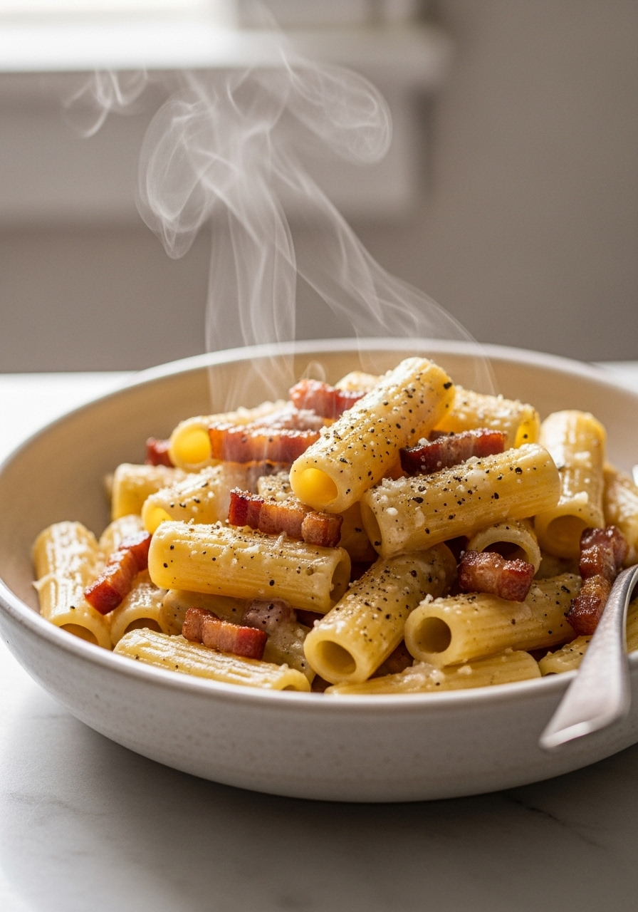
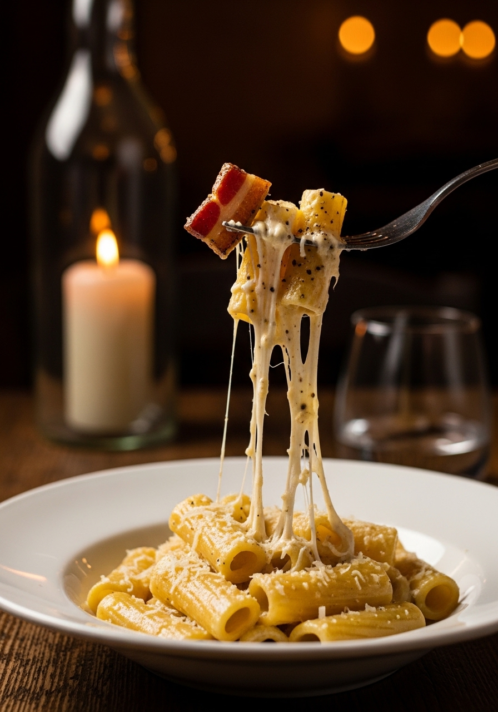

La gricia è la pasta romana più antica e meno conosciuta — eppure è la 'madre' di tutte le paste romane: dalla gricia nacque l'amatriciana (aggiungendo il pomodoro) e dalla gricia nacque la carbonara (aggiungendo l'uovo). Solo tre ingredienti: pasta, guanciale croccante e Pecorino Romano. Niente pomodoro, niente uova, niente panna. La gricia è pura essenza romana — povera negli ingredienti, infinitamente ricca nel sapore.

20 MinLa pasta alla gricia ha origini contadine e pastorali, probabilmente medievali. Il nome deriva secondo alcune teorie da 'Grisciano' — un piccolo paese nei Monti della Laga vicino ad Amatrice — dove i pastori portavano con sé i soli ingredienti che non si deterioravano durante i lunghi mesi di transumanza: guanciale stagionato, Pecorino Romano e pasta secca. Era il cibo di chi non aveva null'altro. Quando nel XVII-XVIII secolo arrivò il pomodoro dall'America, i romani aggiunsero il pomodoro alla gricia e nacque l'amatriciana. Nel XX secolo aggiunsero l'uovo e nacque la carbonara. La gricia è la matrice di tutta la cucina romana.
Nella gricia il guanciale non è sostituibile. La pancetta ha un profilo aromatico diverso (più affumicata, meno sapida) e un diverso contenuto di grasso. Il bacon americano — completamente affumicato — cambia totalmente il carattere del piatto. Il guanciale (guancia di maiale stagionata con pepe e erbe) ha un grasso più morbido e aromatico che si scioglie diversamente in padella, creando quel fondo untuoso e profumato che è l'anima della gricia. Se non trovi il guanciale, usa la pancetta tesa non affumicata come ultimo sostituto — ma la gricia autentica è solo con il guanciale.
Ingredienti
Procedimento

Roma ha quattro paste identitarie, tutte basate sugli stessi ingredienti con varianti minime: la Gricia (guanciale + Pecorino), l'Amatriciana (guanciale + Pecorino + pomodoro), la Carbonara (guanciale + Pecorino + uovo) e la Cacio e Pepe (Pecorino + pepe, senza guanciale). Padroneggiarle tutte e quattro significa comprendere la logica della cucina romana povera: pochi ingredienti, tecnica precisa, risultati straordinari. La gricia è quella meno conosciuta fuori da Roma — ma è quella che i romani veri cucinano di più in casa, perché è la più veloce, la più semplice e la più saporita.
Sì — la gricia è senza uova. La carbonara ha aggiunto l'uovo alla gricia nel XX secolo. La gricia è più antica, più semplice, e per molti romani è la preferita proprio per questa semplicità: solo pasta, guanciale e Pecorino. Non c'è rischio che le uova si rapprendano — la gricia perdona più errori pur richiedendo la stessa attenzione alla tecnica.
I rigatoni sono la scelta classica — la forma rigata e il foro trattengono il grasso e la crema di Pecorino. I tonnarelli (spaghetti alla chitarra romani) sono la seconda scelta tradizionale. Evita formati lisci e sottili: l'impasto grasso e cremoso richiede una pasta che lo trattenga fisicamente.
No — o almeno, non per la gricia autentica. Il Pecorino Romano ha un sapore pungente e sapido che è l'anima del piatto. Il Parmigiano è più delicato e la gricia perde il suo carattere. Se il Pecorino è troppo forte per il tuo palato, usa un mix 50/50 Pecorino + Parmigiano come compromesso.
Il Pecorino si agglomera quando viene a contatto con il calore diretto. Mescola sempre fuori dal fuoco con abbondante acqua di cottura. L'acqua amidacea abbassa la temperatura e aiuta il Pecorino a emulsionarsi. Se si agglomera, aggiungi un mestolo di acqua bollente e mescola energicamente — di solito si recupera.
No — come tutte le paste romane va mangiata immediatamente. Il guanciale croccante diventa molliccio e la crema di Pecorino si rappigli. Se avanza, riscaldala in padella con un po' di acqua a fuoco basso. Meglio calcolare le dosi esatte e non cucinarne troppa.